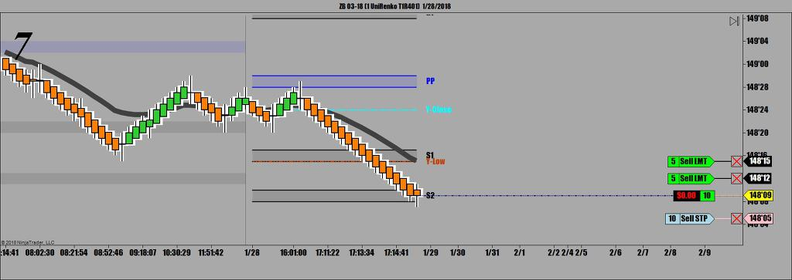
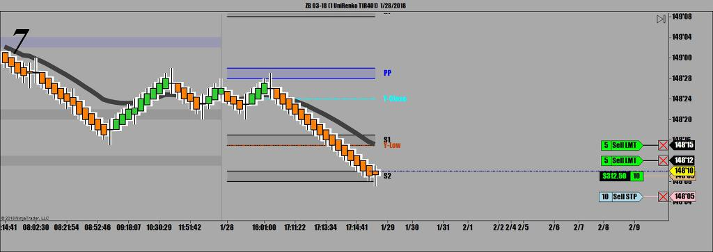
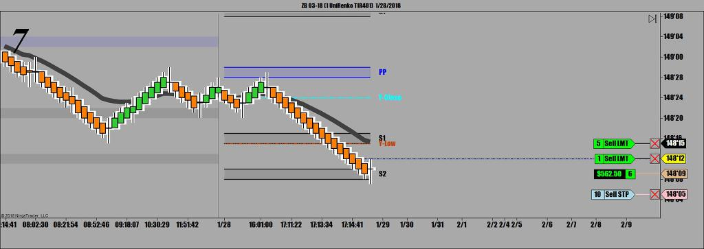
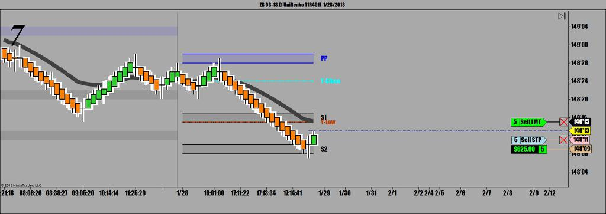
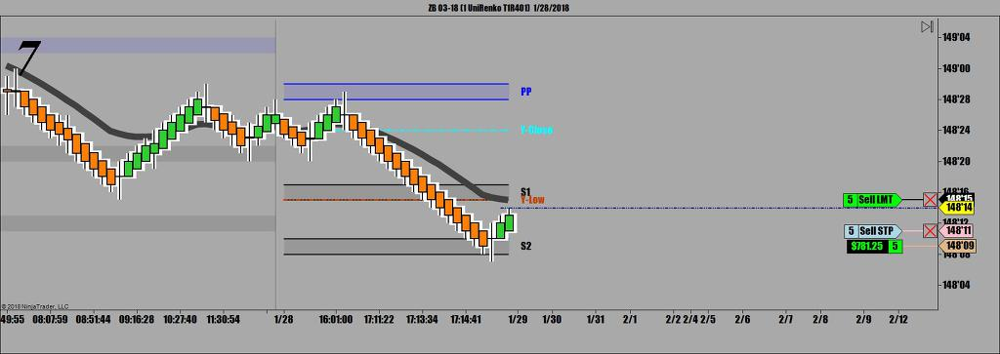
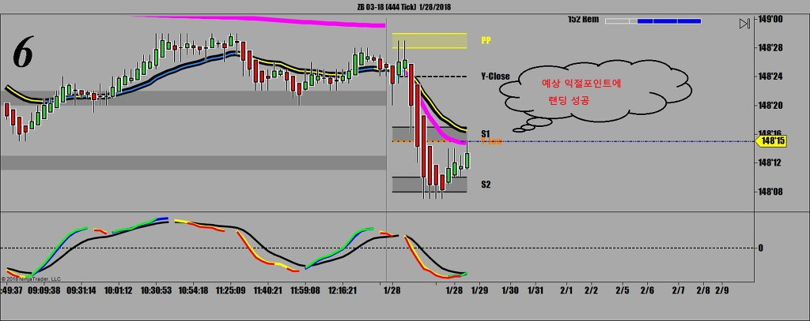
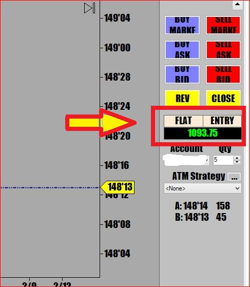

일요일은 오후 3시부터 장외마켓이 시작됨
6시쯤 컴을 켜보니 장외마켓 오픈하자마자 장대봉 하나 이미 만들어져 있음
아마 주말동안 국채이자율에 영향을 미치는 재료가 나와있었던것 같음
당시상황은 이런 상태였음
 1_28_2018.jpg)
카페 매매기법 게시판에 올려놓은것처럼
중요 피봇지지(저항)에서 Pin Bar 출현하면 추세전환신호임
아래 챠트에서 보면 멋진 Pin Bar가 두개씩이나 피봇 저항선에서 만들어졌는데 늦게 들어와서 기회를 놓침
위 챠트에서 보이는대로 전저점에서 쌍바닥을 형성하고 있는 중
아래 챠트에서 보는것처럼 네바닥을 만들면서 피봇에서 강력한 콘크리트 지지를 받고 있음
지켜보다 10 Lot으로 매수 진입
 1_28_2018.jpg)
예상대로 바닥치고 반등.
일단 포지션 잡았는데 어느 지점에서 수익실현을 할 것인지?
항상 포지션을 잡고나면 제일 근접한 피봇 지지(저항)을 익절포인트로 봐야 함
*통계자료에 따르면 피봇 지지(저항)에서 출발한 주가가 다음 피봇 지지(저항)까지 진행할 확률은 78%임*
그만큼 선물 매매에서 피봇 지지(저항)은 믿을 수 있는 듬직한 지표임
분할 매도를 해야 하므로 국채선물의 경우 무조건 1차 목표가는 3틱.
나머지 잔량은 근접한 landing point까지 Runner로 띄워보냄
 1_28_20182.jpg)
보기쉬운 매매챠트 uniRenko Heiken Ashi 로 보면
양쪽끝에 꼬리가 나와있는 Spinning Top을 만들면서 지지받고 있음
매매원칙상 원래는 캔들 색깔 바뀌면 진입이지만 장외마켓에서는 워낙 거래가 뜸하고 움직임이 작아
정확한 지점에서 돌격 앞으로 !!
항상 포지션 잡자마자 4틱 위(아래)로 손절주문 걸어놔야 함



*1차 수익실현을 하고나면 현재 손절오더를 앞쪽으로 전진배치시켜 현재가에서 3틱 뒤쪽에서 계속 따라붙어야 함
주가가 계속 진행하면 계속 3틱간격으로 따라붙다가 언 지점에서 주가가 뒤로 밀리면 손절에 걸려서 청산.
이렇게해야 수익난 매매를 지킬 수 있음.
손절주문을 그대로 뒀다가 일차익절 후에 뒤로 밀리게될 때 먼저 수익났던거까지 다 까먹게 됨


예상대로 익절포인트에 정확하게 랜딩 성공..


오늘 저녁매매 수익 1093불 75전
오늘 매매 정리
1전 1승
매매기법
피봇지지선과 전저점이 만든 쌍바닥에서 받아치기